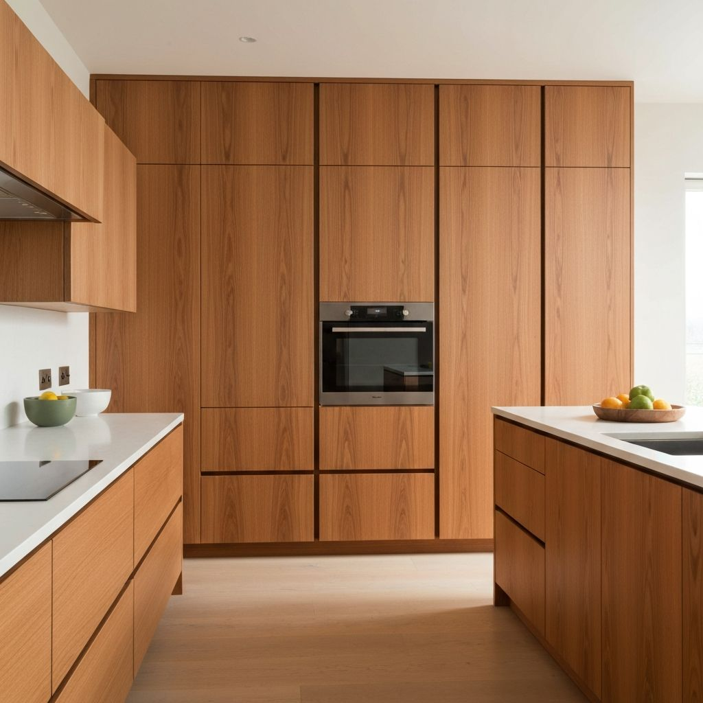

Manufacturing
Precision Kitchen Production
Led end-to-end CNC manufacturing for high-end bespoke kitchen production at Larouch. Implemented optimized WoodWOP programs reducing cycle times by 15% while maintaining strict quality standards.
- WoodWOP 7.2
- Homag Router
- Quality Assurance